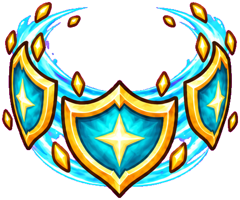
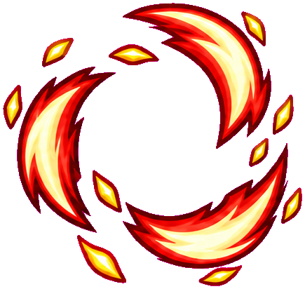
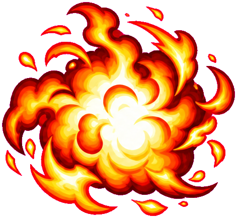
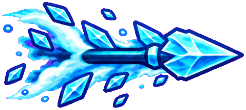
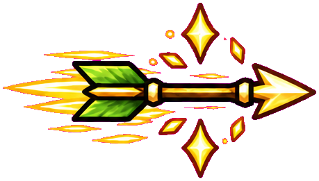
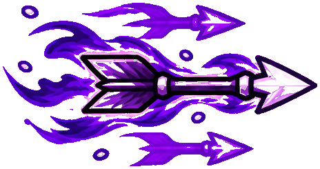

战士

盾阵反击
迎击 · 蓄能 · 震波Q 迎接正面攻击 → 吸收蓄能 → E 震荡反击
用走位方向迎向威胁，预警落下前举盾。等怪群接近再用 E 释放盾能；盾阵不再向前冲锋。
Q 迎击盾阵 E 旋风斩
被动 壁垒 · 储能盾 · 盾震释放
BUILD TRIALS / 构筑试炼
选一个已经搭好的构筑，直接进入第一波。你操控主角，两位 AI 队友协助战斗。

Q 迎接正面攻击 → 吸收蓄能 → E 震荡反击
用走位方向迎向威胁，预警落下前举盾。等怪群接近再用 E 释放盾能；盾阵不再向前冲锋。

普攻积怒 → E 移动轮斩 → 参与击杀续航
贴着怪群边缘边走边转，怒气越足，追加旋刃越密。旋转期间仍会受伤，危险时用闪避脱身。

普攻铺火 → Q 兑现余火 → 击杀接力殉爆
先让普攻点燃敌人，等怪群靠近再放火球。火球提前兑现自己的部分燃烧，燃烧目标倒下时继续爆开。

普攻积寒 → 调整贯穿射线 → Q 打出碎冰
积满寒意后，用冰枪穿过目标，让碎片冲向后方敌人。用 E 铺下寒潮领域，围绕冰场走位持续积寒；Boss 积寒后产生脆弱。

连续普攻积猎印 → 保持射线 → Q 兑现五层
集中攻击一只精英，等猎印积高再射重箭。适度拉开距离，别让障碍挡住弹道；长时间换目标会丢失猎印。

普攻充能 → 横闪留下残影 → E 双点齐射
横向闪避，把自己与残影拉开。在四秒内放 E，形成两处箭雨；充能达到六十时还会追加一轮。